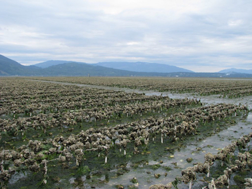
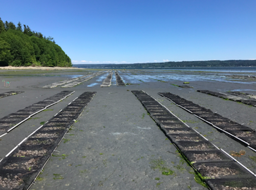
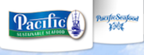
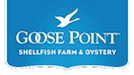

 Pacific Hybreed will establish proprietary breeding programs for Pacific oysters, Manila clams, Kumamoto oysters, rock scallops, and other species to increase yield and help secure a stable and sustainable supply of shellfish in the face of global climate change, a warmer and more acidic ocean, increasingly limited production areas, and emerging diseases. Our advanced breeding methods enable the commercial development of high-performing, resilient shellfish to supply regional and global shellfish aquaculture markets.
 Based in the Pacific Northwest, Pacific Hybreed was founded by Dennis Hedgecock and Joth Davis, who are internationally recognized scientific experts in shellfish genetics and biology. Pacific Hybreed’s business model, products, and intellectual property merge advances in crossbreeding and polyploidy into a proprietary broodstock development program. The crossbreeding program will capitalize on decades of university-based research, which demonstrates the efficacy of crossbreeding to enhance yield and resilience. “Polyploidy” is the addition of chromosome sets, which produces sterile, higher value products that are incapable of breeding with naturally occurring shellfish. Pacific Hybreed’s proprietary process will incorporate the benefits of both approaches, but will not involve or result in genetically modified organisms.
The company is currently raising capital to fund initial operations, including production facilities at the NOAA Northwest Fisheries Science Center Research Station in Manchester, WA. The next phase of development will include a biosecure breeding station at the Pacific Aquaculture & Coastal Resources Center, University of Hawaii, Hilo, HI.
Blah Blah Blah filler Based in the Pacific Northwest, Pacific Hybreed was founded by Dennis Hedgecock and Joth Davis, who are internationally recognized scientific experts in shellfish genetics and biology. Pacific Hybreed’s business model, products, and intellectual property merge advances in crossbreeding and polyploidy into a proprietary broodstock development program. The crossbreeding program will capitalize on decades of university-based research, which demonstrates the efficacy of crossbreeding to enhance yield and resilience. “Polyploidy” is the addition of chromosome sets, which produces sterile, higher value products that are incapable of breeding with naturally occurring shellfish. Pacific Hybreed’s proprietary process will incorporate the benefits of both approaches, but will not involve or result in genetically modified organisms.

